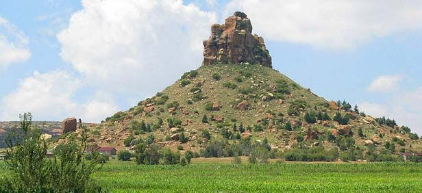
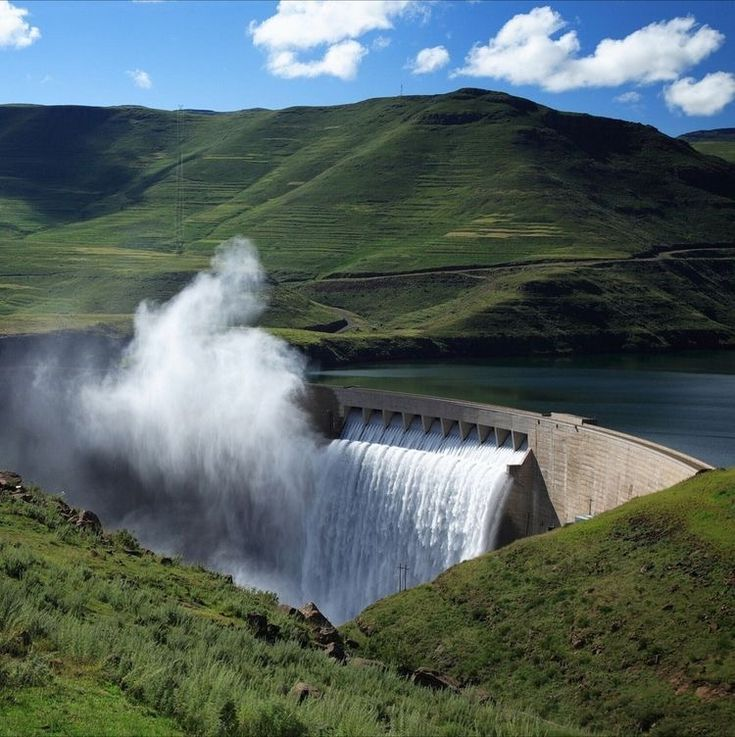

Maletsunyane Falls
Experience the spectacular waterfall and surrounding mountain landscape.

Explore beautiful landscapes, historical places and tourist attractions across the Mountain Kingdom.
One of Lesotho's spectacular natural attractions.

A significant historical and cultural site.

Beautiful mountain scenery surrounding the dam.

Natural landscapes and unique rock formations.
Experience the spectacular waterfall and surrounding mountain landscape.
Discover the impressive dam and beautiful surroundings.
Explore beautiful landscapes and natural rock formations.
Maletsunyane Falls is one of Lesotho's famous natural attractions.
Sehlabathebe is known for its natural landscapes and rock formations.